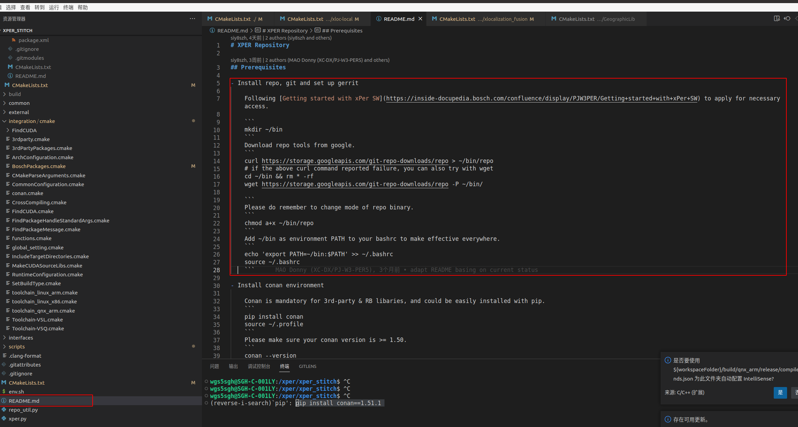
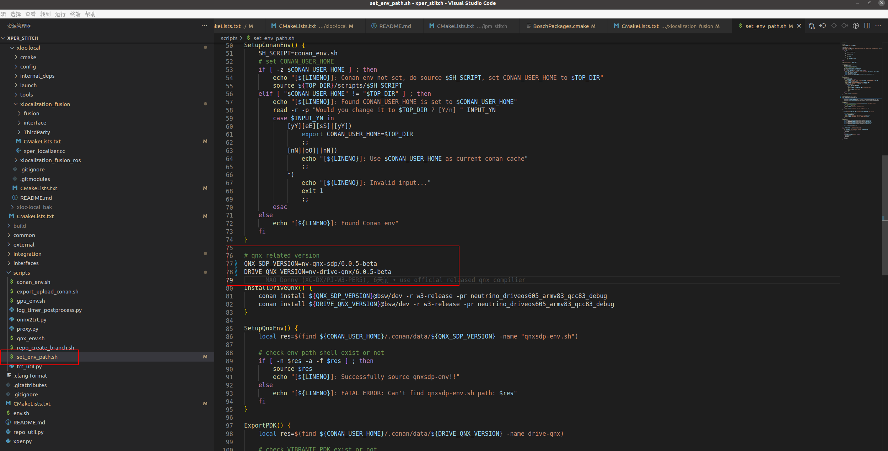
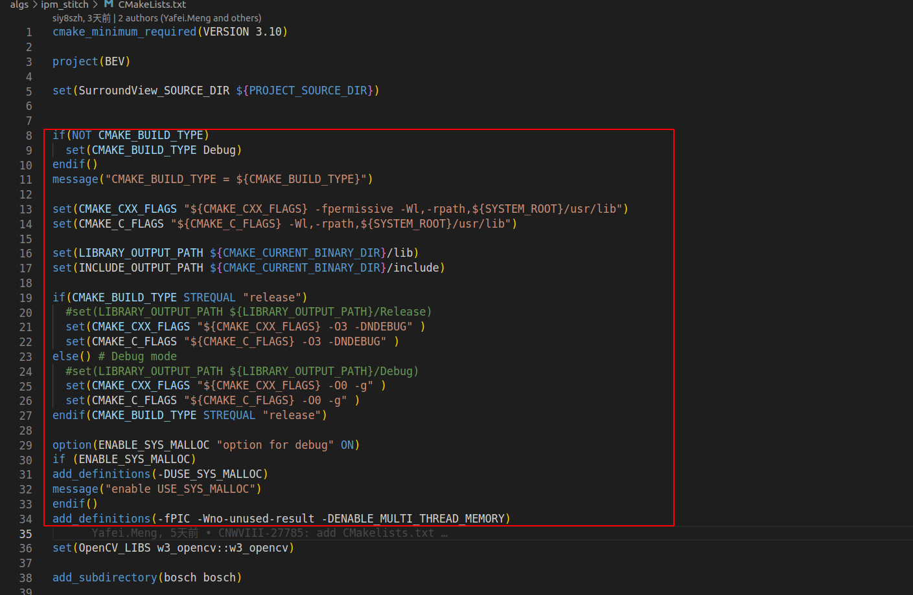
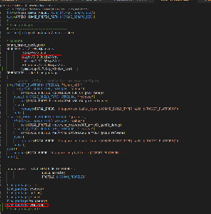
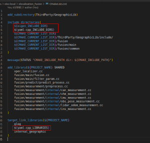

environment setup
Precautions
Terminal uses bash, do not use zsh, learn from YAFEI that ZSH has to configure configuration and it is not yet supported
The Conan version needs to be greater than 1.15.1.
Under your own account, you will verify the account when you get the tool chain
Configuration process
For details of the configuration: CNWVIII-27785 Alg module sample QNX/x86 cross compile & conan generate.
The following is the personal Configuration Process for reference only
Stroke warehouse
git clone ssh://git@sourcecode01.de.bosch.com:7999/pjw3_alg/xper.git xper_stitch
Configure the repo and do it according to the Okura Readme above (don’t do it outside the red box)
- 
Through the REPO p o
cd xper_stitch
./repo_util.py -i -m IPM_STITCH -A (Do not pull all algorithm module warehouses at one time, specify no cuda in the configure stage, the Common directory will still report an error))
After the above two steps are done, the code is fine, you can pass repo info Command to lower the warehouse status
Update QNX version to 6.0.5-Beta

Start Setup cross -compilation environment (only QNX, X86 refer to the link above, it takes a period of time to download here)
source ./scripts/set_env_path.sh -t qnx_arm -g no
After the environment is configured, start compilation (the following two steps are probably understood as Cmake Make)
./xper.py --diskclean --configure --target qnx_arm --release
./xper.py --build
Finish
How to compile your own warehouse
Source code clone to xper_stitch/ algs/ lower
Reference xper_stitch/algs/ipm_stitch/cmakelists.txt Modify CMAKE to obtain an environment variable and configuration
Basically, the configuration in the red frame below should be replaced with the CMAKE settings
- 
Configure the three -party library: Third party Libraries managment
The three -party library above is mainly divided into two aspects
There is QOS Version → It can be considered as a system library, directly link/include, no Find_package operation (but Eigen and OpenCV are packaged, you need to use it to pull it, and both names are modified. You need to pay attention).)
There is no QOS Version, but it provides Conan Package → For packaging, you need to use it to pull it
Take XLOC-LOCAL as an example, using the three-party library EIGEN/YAML-CPP/GLOG, where GLOG thinks it is the system library, and the other two need to be downloaded
For GLOG, you don't need to do anything, you only need to be in the last one When target_link_libraries, add the library name in, and the compiler will find it in the current system environment.
For EIGEN YAML-CPP, you need to download,
Download and analyze in boschpackages.cmake

Use directly in your own cmake

After the compilation is over, the library is: xper_stitch/build/qnx_arm/release/algs/down